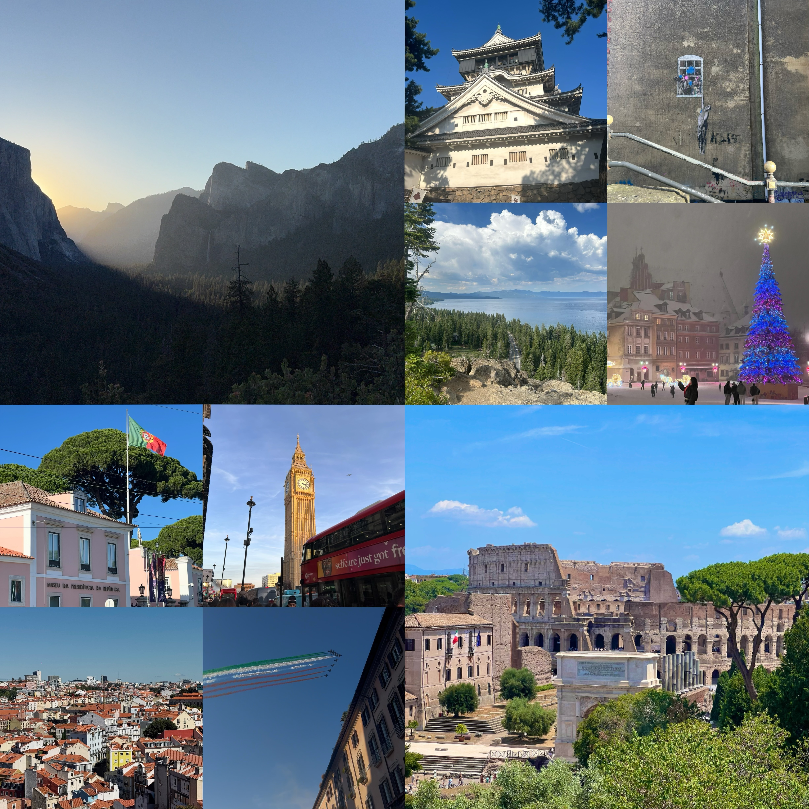

Welcome to My Travel Journal!

Introduction
Hi! Welcome to my travel website! My name is Peng-Yu Chen, and I am from Taiwan. I am currently a fourth-year student studying at Northeastern. I am majoring in Business Administration with a concentration in finance, combined with data science. I am creating this website to share some of my travel experiences and favorite memories.
Traveling is one of my favorite things to do because I enjoy exploring new places and trying new things. I love visiting historical landmarks, walking around cities to discover interesting places, and trying local food.
Another reason I love traveling is that it gives me a break from my daily routine and allows me to experience something different. Instead of spending most of my time studying or following the same schedule, I get to explore new environments and experience different activities. I also think traveling helps me become more open-minded because I get to see things from different perspectives and learn more about the world outside of my everyday life.
On the next page, I will share more about the places I have visited, some photos from my trips to Asia, North America, and Europe, and a bar chart showing how many places I have visited on each continent.
Contact Me
My email: Chen.pengyu@northeastern.edu
My Instagram: chen_8.20